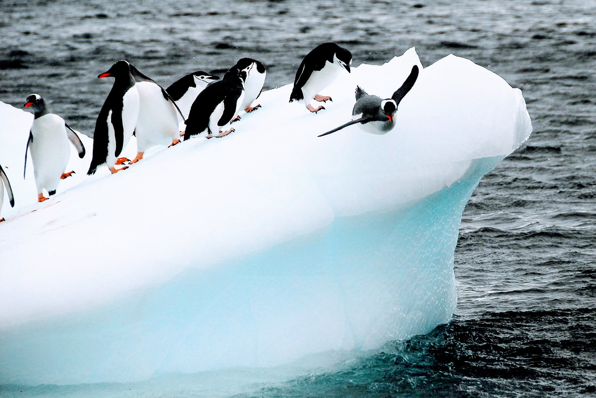

Üdvözöllek Antarktiszban!
gyönyörű antarktiszi jéghegyek

nyugodt fókák a havas antarktiszi tájon

fenséges jéghegy
jégtörő hajó a befagyott vizeken
aranyos pingvinek a sziklás terepen
ismét egy csodás tájkép

ki nem szereti a pingivneket?